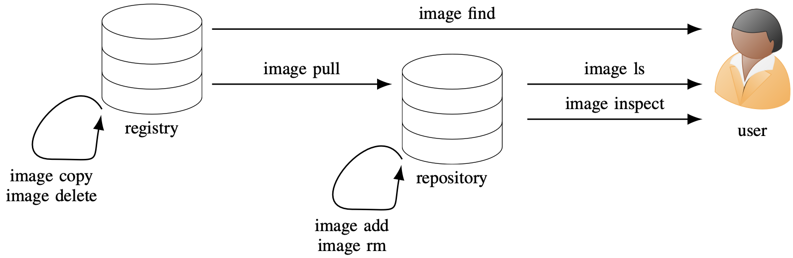

Managing uenvs¶
This page documents how to search for, download and manage your local uenv images.
Uenv are fully self-contained environments stored in a SquashFS file, that have to be downloaded to a local file system before they can be used.
The uenv command line tool provides features for finding uenv that are available, downloading them and searching local uenv.
The commands and their relationship with repositories and registries can be illustrated:

In the above image there are two locations where uenv images are stored:
- The CSCS uenv registry is a server that hosts uenv images, that can be access from all clusters on Alps.
The images in the registry include:
- officially supported uenv images provided by CSCS for users on Alps;
- and, images built by users using the uenv build service.
- A repository (or repo) is a directory on the file system that contains downloaded uenv. See the repository documentation for more information.
Finding and downloading uenv¶
uenv image find¶
The uenv images are in a registry can be queried using the uenv image find command:
uenv image find
$ uenv image find
uenv arch system id size(MB) date
cp2k/2024.1:v1 zen2 eiger 2a56f1df31a4c196 2,693 2024-07-01
cp2k/2024.2:v1 zen2 eiger f83e95328d654c0f 2,739 2024-08-23
cp2k/2024.3:v1 zen2 eiger 7c7369b64b5fabe5 2,740 2024-09-18
editors/24.7:rc1 zen2 eiger e5fb284962908eed 1,030 2024-07-18
editors/24.7:v2 zen2 eiger 4f0f2770616135b1 1,062 2024-09-04
julia/24.9:v1 zen2 eiger 0ff97a74dfcaa44e 539 2024-11-09
linalg/24.11:rc1 zen2 eiger b69f4664bf0cd1c4 770 2024-11-20
linalg/24.11:v1 zen2 eiger c11f6c85028abf5b 776 2024-12-03
linalg-complex/24.11:v1 zen2 eiger 846a04b4713d469b 792 2024-12-03
linaro-forge/24.0.2:v1 zen2 eiger 65734ce35494a5f5 313 2024-07-18
linaro-forge/24.1:v1 zen2 eiger b65d7c85adfb317a 344 2024-11-27
netcdf-tools/2024:v1 zen2 eiger e7e508c34cf40ccd 3,706 2024-11-14
prgenv-gnu/24.11:rc4 zen2 eiger 811469b00f030493 570 2024-11-21
prgenv-gnu/24.11:v1 zen2 eiger 0b6ab5fc4907bb38 572 2024-11-27
prgenv-gnu/24.7:v1 zen2 eiger 7f68f4c8099de257 478 2024-07-01
quantumespresso/v7.3.1:v1 zen2 eiger 61d1f21881a65578 864 2024-11-08
The output above lists all of the uenv that are available on the current system (Eiger in this case).
The search can be refined by providing a label.
Using labels to refine search
# find all uenv with name prgenv-gnu
uenv image find prgenv-gnu
# find all uenv with name and version prgenv-gnu/24.11
uenv image find prgenv-gnu/24.11
# find all uenv available for daint
uenv image find @daint
# find all prgenv-gnu uenv available on a cluster
uenv image find prgenv-gnu@daint
# find all uenv in the service namespace with name myenv
uenv image find service::myenv
Info
All uenv commands that take a label as an argument use the same flexible syntax label descriptions.
uenv image pull¶
To download a uenv so that you can use it, use the uenv image pull command to download it from the registry to your local repository.
For example, to download a version of the prgenv-gnu uenv:
uenv image pull
Some images can be large, over 10 GB, and it can take a while to download them from the registry.
Accessing restricted software¶
By default, uenv can be pulled by all users on a system, with no restrictions.
Some uenv are not available to all users, for example the vasp images are only available for users with a VASP license, who are added to the vasp group once they have provided CSCS with a copy of their license.
To be able to pull such images a token that authorizes access must be provided. Tokens are created by CSCS, and stored on SCRATCH in a file that only users who have access to the software can read.
using a token to access VASP
Note
As of June 2025, the only restricted software is VASP.
Note
Better token management is under development - tokens will be stored in a central location and will be easier to use.
Managing local images¶
uenv image ls¶
To view all uenv that are available and ready to run from your repo, use the uenv image ls command:
listing downloaded uenv
$ uenv image ls
uenv arch system id size(MB) date
editors/24.7:v2 gh200 daint e7b0d930df729da5 1,270 2024-09-04
gromacs/2024:v1 gh200 daint b58e6406810279d5 3,658 2024-09-12
julia/24.9:v1 gh200 daint 7a4269abfdadc046 3,939 2024-11-09
linalg/24.11:v1 gh200 daint e1640cf6aafdca01 4,461 2024-12-03
linaro-forge/23.1.2:v1 gh200 daint fd67b726a90318d6 341 2024-08-26
namd/3.0:v3 gh200 daint 49bc65c6905eb5da 4,028 2024-12-12
netcdf-tools/2024:v1 gh200 daint 2a799e99a12b7c13 1,260 2024-09-04
prgenv-gnu/24.11:v1 gh200 daint b81fd6ba25e88782 4,191 2024-11-27
prgenv-gnu/24.7:v3 gh200 daint b50ca0d101456970 3,859 2024-08-23
prgenv-nvfortran/24.11:v1 gh200 daint d2afc254383cef20 8,703 2025-01-30
You can apply filters, for example show only uenv with the name prgenv-gnu:
$ uenv image ls prgenv-gnu
uenv arch system id size(MB) date
prgenv-gnu/24.11:v1 gh200 daint b81fd6ba25e88782 4,191 2024-11-27
prgenv-gnu/24.7:v3 gh200 daint b50ca0d101456970 3,859 2024-08-23
Or only uenv with the tag v3:
filtering downloaded uenv
This command will show you all images that have been downloaded to your repo, and labelled for the current cluster.
The examples above were executed on Daint (see the system column in the output).
To view all images that are available for all clusters:
uenv image rm¶
To remove downloaded images from your repo, use the uenv image rm command.
removing uenv from a repo
In the following examples
$ uenv image ls
uenv arch system id size(MB) date
cp2k-spm-tools/1.5.0:1658742098 gh200 daint 01edd4331d3676b2 668 2025-02-06
eccodes/cug:1800983313 gh200 daint cab8e857967d0708 4,036 2025-05-05
editors/24.7:v2 gh200 daint e7b0d930df729da5 1,270 2024-09-04
gpaw/25.1:1639708786 gh200 daint f43e2034d7d8849f 695 2025-01-24
gromacs/2024:v1 gh200 daint b58e6406810279d5 3,658 2024-09-12
# remove cp2k-spm-tools using its label
$ uenv image rm cp2k-spm-tools/1.5.0:1658742098
the following uenv was removed:
cp2k-spm-tools/1.5.0:1658742098 gh200 daint 01edd4331d3676b2 668 2025-02-06
# remove gpaw using its id
$ uenv image rm f43e2034d7d8849f
the following uenv was removed:
gpaw/25.1:1639708786 gh200 daint f43e2034d7d8849f 695 2025-01-24
$ uenv image ls
uenv arch system id size(MB) date
eccodes/cug:1800983313 gh200 daint cab8e857967d0708 4,036 2025-05-05
editors/24.7:v2 gh200 daint e7b0d930df729da5 1,270 2024-09-04
gromacs/2024:v1 gh200 daint b58e6406810279d5 3,658 2024-09-12
uenv image add¶
To add a uenv SquashFS file to a repo, so that it can be used with a label, use the uenv image add command.
add an image to the default repo
Note that the label must be of the complete name/version:tag@system%uarch form.
Repositories¶
A repository is a directory that contains an sqlite database index.db in the root, and an images sub-directory that contains the individual uenv that have been downloaded in directories.
repo
├── index.db
└── images
├── 01ed...a5ab
│ └── store.squashfs
├── 0b6a...24c1
│ └── store.squashfs
└── 1528...785a
└── store.squashfs
Creating and using repositories¶
A repo will automatically be created in your Scratch path attached to the cluster you are on when you first use uenv. This default repo is used by all calls to uenv, unless it is overridden using the options in this section.
Where is my repo?
The Scratch filesystem used depends on the cluster:
| cluster | repo path | notes |
|---|---|---|
| Eiger, Daint | /capstor/scratch/cscs/$USER/.uenv-images |
will move to /ritom/scratch/cscs/$USER/.uenv-images when it replaces capstor in December 2025 |
| Santis | /capstor/scratch/cscs/$USER/.uenv-images |
|
| Clariden | /iopsstor/scratch/cscs/$USER/.uenv-images |
|
| Others | $SCRATCH/.uenv-images |
$HOME/.uenv/repo on systems with no SCRATCH defined. |
The location of your default repo can be changed by setting the repo field in the uenv config file.
For example, the following would use a shared repo in a project’s Store:
The --repo flag can also be used to use a specific repo on the command line, for example to list all uenv in the repo `/capstor/store/cscs/userlab/sm42/team-uenv:
--repo flag goes between uenv and the command, image ls in the example above, and can be used with all uenv commands.
uenv repo status¶
The uenv repo status command provides information about a repository.
By default, uenv repo status will print information about the default repo.
To get the status of a different repo, provide it as an optional positional argument:
The information provided includes:
- the location of the repository;
- whether the repository is read only or writable;
- and, whether the repository is on a lustre file system.
Warnings are printed if:
- the repo is on a Lustre file system and contains unstriped images;
- the repo is in inconsistent state;
- or, if the repo database needs updating.
If a warning is printed, it is possible to fix the issues by running the repo update command.
what is an inconsistent repo?
A repository is inconsistent if one or more uenv images have been removed without updating the database. This should not happen to repositories in the default location, which are protected from cleanup policies. However, if you are using a non-standard location, infrequently used images may be removed by Scratch cleanup. Images can sometimes be removed manually/accidentally.
uenv repo update¶
The repo update command can upgrade or fix issues in a repository, if needed. Currently two updates are applied:
- apply Lustre striping if the repo is on a Lustre file system and no striping has already been applied;
- remove uenv from the database if their squashfs file does not exist which can occur to repos on non-default locations that are subject to clean up policies.
# apply all updates to the default repo
$ uenv repo update
# only apply consistency fixes and database updates to the default repo
$ uenv repo update --no-lustre
# apply updates to a non-default repo location
$ uenv repo update /capstor/scratch/cscs/$USER/my-other-repo
Lustre striping
uenv 9.1.0 applies Lustre striping to new repositories by default. Striping only needs to be applied once to repos created with older versions, and only has to be applied once.
As a general rule, striping is only needed for workloads that run at very large scale, on hundreds of nodes.
Applying striping can take over 10 minutes for larger repositories.
Use the --no-lustre option if you only want to fix inconsistencies.
uenv repo migrate¶
The repo migrate command copies a repository to a new location.
There are two main use cases:
- copying a repo to a new location;
- and, updating a target repo to include all images from another repo.
The command takes two arguments, a source and destination repo:
If the destination repo does not exist, it is created and a populated with a complete copy of the source repo. Otherwise, all images from the source are copied into destination, with only missing images copied (effectively synchronizing the destination with the source).
If only one argument is passed, the default repo is used as the source.
Warning
Migration of large repos can take a significant amount of time - budget roughly 30 minutes. If migration is cancelled by the user, or by a system issue, it can be resumed with the same command, which will continue from where the migration was when canceled.
Migration to Ritom¶
In March-April 2026 the Scratch filesystem on Daint and Eiger will be moved to a newly-installed filesystem called Ritom.
The default repository location will change from /capstor/scratch/cscs/$USER/.uenv-images to /ritom/scratch/cscs/$USER/.uenv-images.
There is a transition period, during which it is possible to use both Capstor and Ritom, and a message like the following will be shown by uenv when it is time to migrate:
uenv migration message
--------------------------------------------------------------------------------
warning: the default uenv repo on this system has moved to a new location:
/iopsstor/scratch/cscs/bcumming/.uenv-images
Migrate your repo, while the old location is still available, with this command:
uenv repo migrate --sync /capstor/scratch/cscs/<user>/.uenv-images \
/ritom/scratch/cscs/<user>/.uenv-images
Migration can take over 30 minutes, and must be completed fully after it has
been started for all of the original images to be available. If interrupted,
migration can be resumed using the same command.
note: uenv will continue using the old location and printing this warning until
the migration is performed.
Set the environment variable UENV_WARN_MIGRATE to silence this warning.
--------------------------------------------------------------------------------
The migration message is currently disabled, because we are not ready to migrate uenv for the reasons explained below.
If the migration is interrupted, the new default repository will not contain all uenv images, and you will need to finish the migration by running the same command again.
Ritom might have access permission problems
Ritom is currently mounted on Daint and Eiger, however it was mounted with squash root enabled, which might give you an error message:
error: invalid squashfs mount /ritom/scratch/cscs/<your-username>/.uenv-images/images/5ef04b766304650d705a859f939992b90ba9278138bd98e5555763d245ffbca6/store.squashfs:/user-environment - invalid squashfs /user-environment (Permission denied)
$ chown $(id -un):$(id -gn) /ritom/scratch/cscs/$(id -un)
$ chown --recursive $(id -un):$(id -gn) /ritom/scratch/cscs/$(id -un)/.uenv-images
Another option is to use uenv images stored on capstor instead of Ritom. If you migrated the default repository from Capstor to Ritom, the old repository on Capstor was not deleted. The easiest fix is to remove the Ritom repository, so that uenv falls back to using Capstor.
First, check whether the old repository on Capstor scratch exists:
Checking whether there is a repository on Capstor
If there is no repository on Capstor, first create one (skip this step if one already exists).
Then remove the repository on ritom, while keeping a copy of it:
If the move was successful, then the uenv repo status command will show location of the default repository on /capstor/scratch: